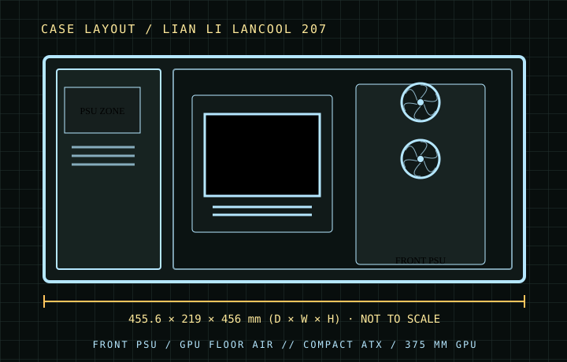

[ CASES // IDENTIFIED CHASSIS ]
Lian Li LANCOOL 207
The LANCOOL 207 packs standard ATX support into a shorter enclosure by moving the ATX power supply to the front and including two bottom fans beneath the motherboard area. It is unusually compact for its board size, but PSU cable orientation, graphics-card thickness and the bottom intake path make fit checks particularly important.

MODEL SCOPE: Specifications describe the named enclosure generation, not every visually similar case or retail bundle. Published maximums are component-envelope limits; verify the exact SKU, installed fans/radiators, connectors, and manufacturer manual before purchase or assembly.
Dimensions & compatibility
| Cataloged model | Lian Li LANCOOL 207 |
|---|---|
| Generation / class | 2024 · compact ATX airflow mid-tower |
| External dimensions | 455.6 × 219 × 456 mm (D × W × H) |
| Motherboard fit | ATX, Micro-ATX and Mini-ITX. |
| Drive compatibility | Two combination trays; each accepts a 3.5-inch HDD or 2.5-inch SSD, for two installed drives total. |
| Graphics card | Up to 375 mm official length. |
| CPU air cooler | Up to 180 mm tower height. |
| Power supply | Standard ATX PSU up to 160 mm; front-mounted with side-facing cable connections. |
| Fans and radiators | Two 140 mm front ARGB fans and two 120 mm bottom PWM fans are included. Roof supports up to 3×120/2×140 mm and a 360/280 mm radiator; rear supports 120 mm fan. The front PSU position removes a conventional front radiator mount. |
Fit notes for this layout
The 207 is not a smaller LANCOOL 216: its front-mounted PSU and bottom GPU fans define its internal envelope. Use the manufacturer’s 375 mm graphics-card limit; reviewer measurements and individual cards can vary by connector location and card shape.
- Choose a PSU no longer than the 160 mm specification and plan side-facing modular cable access before board/GPU installation.
- The pair of bottom fans feeds the GPU directly; a very thick card or sag bracket may reduce the gap and alter the intended airflow.
- Storage is limited to two combo trays, so an NVMe-heavy board or external storage is more suitable than multiple SATA drives.
Source record
- Lian Li — LANCOOL 207 product specificationsManufacturer dimensions, board support, clearances and included fans.
- TechPowerUp — Lian Li LANCOOL 207 reviewIndependent review of the front-mounted PSU and compact cooling layout.
- KitGuru — Lian Li LANCOOL 207 reviewIndependent assembly and thermal assessment.
Case specifications are manufacturer-rated maximums unless stated otherwise. Component shape, mounting hardware and assembly order can reduce practical clearance; consult the exact revision manual when dimensions are critical.